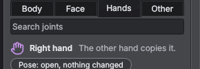
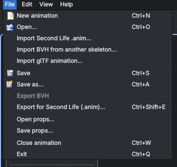
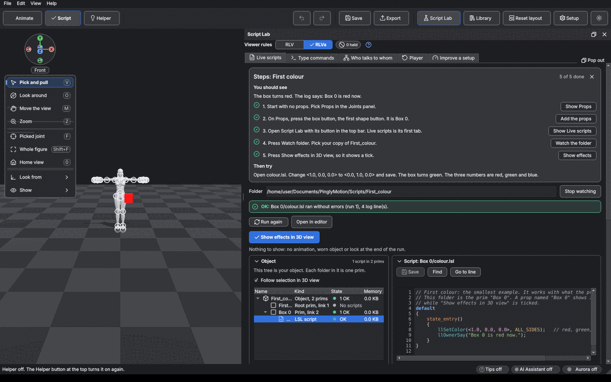
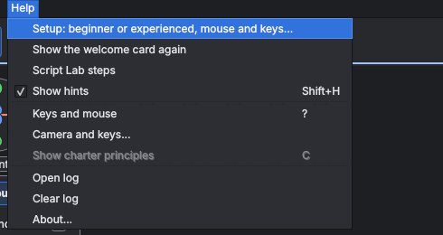

Brukerveiledning for PinglyMotion
For PinglyMotion 0.3.0, en tidlig forhåndsversjon. Skrevet for folk som er nye innen animasjon og skripting.
Denne veiledningen sier hva hver del av programmet gjør. Den sier hva som er ferdig og hva som ikke er det. Der noe er en prøveversjon, eller ikke testet i Second Life, står det.
Maskinoversatt fra den engelske veiledningen. Ingen som har norsk som morsmål har sjekket den. Hvis noe er uklart, gjelder den engelske veiledningen.
Alle bildene er ekte skjermbilder av programmet (Linux-versjon, mørkt tema). Bildet som er merket «diagram» er tegnet for denne veiledningen.
Innhold
- Begynn her: hva det er, helhetsbildet, hvem det er for, hvor du starter
- Hurtigstart: de første fem minuttene
- Hva som er ferdig og hva som ikke er det
- Kapittel 1: Installer og start
- Kapittel 2: Vinduet på ett bilde
- Kapittel 3: Din første animasjon
- Kapittel 4: Posering i detalj
- Kapittel 5: Tidslinjen, nøkler og avspilling
- Kapittel 6: 3D-visningen og kameraet
- Kapittel 7: Rekvisitter
- Kapittel 8: Biblioteket
- Kapittel 9: Filer og formater
- Kapittel 10: Script Lab for nybegynnere
- Kapittel 11: AI-assistenter
- Kapittel 12: Den direkte koblingen til Aurora
- Kapittel 13: Oppsett, temaer og hjelp
- Kapittel 14: Hurtigtaster og mus
- Kapittel 15: Alle menyvalg
- Kapittel 16: Feilsøking og tilbakemelding
- Kapittel 17: Takk og kilder
- Ordliste
Begynn her
Hva PinglyMotion er til for
Second Life er en virtuell verden. Folk der bruker animasjoner for at avatarene deres skal stå, sitte, danse og vinke. En animasjon er en bevegelse som er lagret i en fil.
PinglyMotion hjelper deg å lage slike bevegelser. Det er gratis. Det er åpen kildekode, som betyr at hvem som helst kan lese og forbedre programmet.
PinglyMotion gjør tre ting:
- Animere en figur. Du bøyer leddene på en 3D-figur. Du lagrer posituren på bestemte tidspunkter. Programmet fyller inn bevegelsen mellom dem. Du eksporterer resultatet til Second Life.
- Teste skript trygt. Objekter i Second Life bruker skript. PinglyMotion har en trygg sandkasse, Script Lab, der du kan kjøre RLV- og LSL-skript på din egen datamaskin. Ingenting du gjør der når Second Life. Bruk skript du stoler på. Script Lab er nytt, og et svært uvanlig skript kan få programmet til å krasje, så lagre animasjonen din først.
- Jobbe med en AI-hjelper, hvis du vil. En AI-assistent på din egen datamaskin kan sette figuren i positur for deg. Den er av helt til du slår den på. Alt fungerer uten den.
PinglyMotion er en tidlig forhåndsversjon. Den er laget for utprøving og tilbakemeldinger. Regn med ujevnheter. Se Hva som er ferdig og hva som ikke er det.
Helhetsbildet

Diagram tegnet for denne veiledningen.
Programmet er ett vindu med to sider. Du bytter med knappene Animate og Script øverst til venstre.
- Animate viser panelene for å lage en animasjon: Joints-listen, 3D-visningen, panelet Selected joint og Timeline.
- Script gir det meste av vinduet til Script Lab. 3D-visningen blir stående til venstre.
Hver side husker sin egen oppsetting av paneler. 3D-visningen er felles. En rekvisitt (en enkel 3D-form) eller virkningen av et skript vises ved siden av figuren.
Andre deler:
- Library inneholder 106 ferdige bevegelser. Du kan starte med en av dem.
- Rekvisitter er enkle former du kan plassere i scenen.
- Mappen examples ved siden av programmet inneholder filer du kan åpne og følge med på sammen med denne veiledningen.
- AI Assistant er en bryter nederst til høyre. Den er av ved hver oppstart.
Hvem det er for
- Nybegynnere. Du har aldri laget en animasjon eller skrevet et skript. Programmet starter i Beginner-modus. Det viser et velkomstkort, hintkort og et Helper-panel. Denne veiledningen forklarer hvert ord.
- Erfarne brukere. Du kan animasjonsverktøy som Maya eller Blender. Slå på Expert-modus (Shift+E). Da får du flere kontroller, for eksempel kurveredigering og en andre figur. Du kan velge mus- og tastestil fra Maya, Blender eller Second Life.
Hvor skal jeg starte?
- Jeg vil lage en animasjon. Les Hurtigstart. Følg deretter Kapittel 3: Din første animasjon.
- Jeg vil teste skript. Gå til Kapittel 10: Script Lab for nybegynnere. Du trenger ingen animasjon først.
- Jeg vil ha hjelp av en AI. Les Kapittel 11.
- Jeg vil vite hva som fungerer. Les Hva som er ferdig og hva som ikke er det.
Hurtigstart: de første fem minuttene
- Last ned. Hent Windows-zip-filen eller Linux-AppImage fra utgivelsessiden (se Kapittel 1).
- Start. På Windows pakker du ut zip-filen. Start
PinglyMotion.exe. På Linux gjør du AppImage kjørbar og starter den. Velkomstkort. Første oppstart viser «Make your first animation». Velg New to animation. Trykk Standing.

- Åpne Joints-listen. Velg View > Joints. Klikk Left Arm: Whole Arm i listen. Figuren viser ringer på det leddet.
- Lagre en første nøkkel. Trykk Set the first key nederst på skjermen. En nøkkel er en lagret positur på ett tidspunkt.
- Sett i positur. Dra tidsmarkøren (glideren over Start-knappen) mot høyre. I panelet Selected joint skriver du
-60i boksen Lean to the side. Trykk Enter. Armen senkes. Programmet lagrer en nøkkel for deg. - Spill av. Trykk Start. Trykk Stop for å stoppe.
- Lagre. Trykk Save øverst og velg et navn. Filen ender på
.dingle.
Det er en hel animasjon. Kapittel 3 forklarer hvert trinn. For å lage en fil til Second Life trykker du Export (se Kapittel 9).
Det som ikke er ferdig, står i Hva som er ferdig og hva som ikke er det.
Hva som er ferdig og hva som ikke er det
Hvert punkt har ett av disse ordene:
- Built. Det fungerer i programmet og har automatiske tester.
- Partly built. Noe av det fungerer. Teksten sier hva som mangler.
- Trial. Det finnes, men det er en prøve. Det kan endre seg eller gå i stykker.
- Not built. Det er planlagt eller bare en idé.
- Not tested in Second Life. Programmet gjør det det skal på din datamaskin. Ingen har ennå sjekket at Second Life godtar eller kjører resultatet.
Datoene er fra prosjektets dokumenter per 25. november 2026.
| Del | Status | Merknader |
|---|---|---|
| Sette ledd i positur, nøkler, tidslinje, avspilling, angre | Built | Kapittel 3 til 5. |
Lagre som .dingle, åpne .dingle, .bvh, .avm | Built | Gamle .avm-filer åpnes og lagres som .dingle. |
Eksport til Second Life (.anim) | Built | Eksport, opplasting og avspilling av en testanimasjon er prøvd i Second Life. |
Importere .anim, BVH fra et annet skjelett, glTF | Built | Fotlås (hindrer at føttene glir) er not built. |
| Bibliotek med 106 bevegelser | Built | Bevegelsene kommer fra åpne kilder. Lisensene vises i panelet. |
| Rekvisitter (boks, kule, kjegle, ring) | Built | Det er enkle former. En rekvisitt kan ikke gis nytt navn ennå. |
| To figurer i én scene (Expert-modus) | Built | Bare i Expert-modus. |
| Ansiktsledd | Partly built | Ansiktsleddene er satt på vent. Fanen Face finnes, men ansiktet er ikke et satsingsområde. |
| Script Lab: RLV-kommandoer | Built | En sandkasse med mer enn 200 RLV-atferder. Not tested in Second Life. Den endelige testen er alltid i Second Life. |
| Script Lab: LSL-skript kjører i en sandkasse | Partly built | Mer enn 280 innebygde funksjoner, en simulert klokke. Noen funksjoner registrerer bare hva de ble bedt om. Mange gjør ingenting ennå. Not tested in Second Life. |
| Script Lab: Live scripts, tre, rekvisitter fra prims | Built | Én mappe er ett objekt. En rekvisitt med samme navn som en prim hører til den. |
| Script Lab: Player, Who talks to whom, Record what I do | Built | Not tested in Second Life. Noen deler av 3D-visningen følger ikke spilleren (se Kapittel 10). |
| Script Lab: Improve a setup | Partly built | Minnetallene tar ikke med minnet som selve koden bruker. Det krever en måling i Second Life. |
| Script Lab: OpenCollar-eksempel | Built | Et ekte halsbånd med 23 skript kjører i sandkassen. Not tested in Second Life. |
| Script Lab: Lua (SLua) | Trial | Bak en bryter som er av ved start. Editoren får et språkvalg og en knapp Convert to SLua. Ingenting kjører Lua ennå. Ingen Lua-sjekker eller forslag. Not tested in Second Life. |
| Nettversjon (i en nettleser) | Trial | Det finnes bare en prøvebygging. Den fungerer ikke godt ennå. Ikke planlegg å bruke den. |
| AI-assistent (lokal styring) | Built | Av ved hver oppstart. Claude: en utvidelse følger med. ChatGPT og andre verktøy: oppsettet er skrevet, men ikke testet av oss. |
| Direkte kobling til Aurora | Partly built | Fungerer på Windows med en spesialbygd versjon (en fork) av Aurora-viseren. Fungerer ikke med vanlig Aurora ennå. |
| Oversettelser | Not built | Programmet finnes bare på engelsk. Rørleggerarbeidet er på plass. |
| Kodesignering for Windows | Not built | Windows kan advare om ukjent utgiver. |
| Installasjonsprogram | Not built | Windows-nedlastingen er en zip-fil. |
Noen forskjeller mellom programmet og den klikkbare mockupen på nettstedet blir fortsatt rettet. Hvis en skjerm i mockupen ser annerledes ut, stol på denne veiledningen og programmet.
Kapittel 1: Installer og start
Windows
- Åpne prosjektets utgivelsesside: https://github.com/pingledingle-tech/PinglyMotion/releases.
- Last ned Windows-zip-filen. Last også ned
SHA256SUMShvis du vil kontrollere nedlastingen. - Pakk ut zip-filen til en mappe du velger. La mappen
dataligge ved siden av programmet. - Start
PinglyMotion.exe.
Zip-filen inneholder også mappen examples (filer som brukes i denne veiledningen), mappen library og mappen mcp (for AI-assistenter).
Det finnes ikke noe installasjonsprogram. For å fjerne programmet sletter du mappen.
Linux
- Last ned AppImage fra utgivelsessiden.
- Gjør den kjørbar:
chmod +x PinglyMotion*.AppImage. - Start den.
Hva du trenger
Et grafikkort og en driver med OpenGL 3.3 eller nyere. Hvis 3D-visningen forblir svart, oppdater grafikkdriveren.
Hva programmet skriver på datamaskinen din
- Innstillinger: en vanlig fil (
%APPDATA%\PinglyMotionpå Windows,~/.config/PinglyMotionpå Linux). - En feillogg og tilkoblingsfilen for AI-assistenten: i
%LOCALAPPDATA%\PinglyMotionpå Windows eller~/.local/share/PinglyMotionpå Linux. - Script Lab-eksempler du lager: i
Documents/PinglyMotion/Scripts.
PinglyMotion samler ingen personopplysninger og sender ingen telemetri. Programmet ser omtrent én gang i uken, når det starter, etter en nyere versjon (den «Update check»).
Første oppstart
Første oppstart viser velkomstkortet (se Hurtigstart). Velg Skip hvis du vil ha en tom figur. Du kan vise kortet igjen med Help > Show the welcome card again.
Eksempel. Start programmet. Trykk Skip på velkomstkortet. Du ser en figur i T-positur (armene rett ut til sidene) på et rutete gulv.
Kapittel 2: Vinduet på ett bilde

Ovenfra og ned:
- Menylinje: File, Edit, View, Help. Hvert menyvalg er listet i Kapittel 15.
Toppfelt. Fra venstre til høyre:
- Animate og Script bytter mellom de to sidene (F7 og F8).
- Helper slår Helper-panelet av og på.
- Pilene for Undo og Redo.
- Save og Export.
- Script Lab og Library åpner de panelene.
- Reset layout setter hvert panel tilbake dit det startet.
- Setup åpner innstillingene.
- Solknappen bytter mellom mørkt og lyst tema.
- Joints-panel (til venstre): listen over ledd, med fanene Avatar og Props.
- 3D-visning (midten): figuren og gulvet. Øverst til venstre er view-direction widget (klikk på enden av en akse for å se derfra). Under den er view toolbar med verktøyene Pick and pull, Look around, Move the view og Zoom.
- Selected joint-panel (til høyre): dreier leddet du har valgt.
- Timeline (nederst): nøkler over tid, easing-flisene, tidsmarkøren og avspillingsknappene.
- Statuslinje (aller nederst): en hjelpelinje til venstre. Til høyre: bryterne Tips, AI Assistant og Aurora.
Paneler du kan flytte og endre størrelse på
Hvert panel kan:
- dras etter tittelen til et nytt sted,
- løsrives til et eget vindu (det lille firkantikonet i tittelen),
- få ny størrelse ved at du drar i skillelinjene mellom panelene,
- skjules med X-en i tittelen.
Trykk Tab for å skjule eller vise alle panelene. View > Reset layout (eller knappen Reset layout) setter alt tilbake. Reset layout nullstiller begge sidene.
Eksempel. Dra Timeline etter tittelen til høyre side. Trykk Reset layout. Den hopper tilbake til bunnen.
Animate og Script
Trykk Script (eller F8). Script Lab fyller høyre side av vinduet.

Trykk Animate (eller F7). Animasjonspanelene dine er tilbake slik du forlot dem.
Helper
Knappen Helper viser et lite panel nederst til høyre i 3D-visningen. Det viser neste hintkort og tre korte leksjoner:
- Make your first move: velg et ledd, drei det, lagre en nøkkel og se på det.
- Arrange the windows: åpne Library, og sett så hvert vindu tilbake.
- Try the Script Lab: bytt til Script og tilbake.
En ring markerer den virkelige kontrollen et trinn snakker om. Et trinn går videre når du gjør det. Trykk Turn hints off for å stoppe hintkortene. Slå Helper av, så er programmet rent.
Helper-knappen og Help > Show hints (Shift+H) er den samme innstillingen.
Beginner og Expert
View > Expert mode (Shift+E) viser flere kontroller. Expert-modus legger til:
- Paste mirrored,
- Edit curve i tidslinjen,
- et rutenett med hvert fingerledd i grader på fanen Hands,
- en bryter for å vise hvert ledd i tidslinjen,
- den andre figuren (File > Add a second figure, i Library-panelet: Add as a second figure).
Den samme bryteren finnes i Setup.
Kapittel 3: Din første animasjon
Du skal lage en kort armbevegelse på omtrent ti minutter.
Først tre ord.
- En nøkkel er en lagret positur på ett tidspunkt. Programmet fyller inn bevegelsen mellom to nøkler.
- En ramme (frame) er ett steg i tid.
- Tidsmarkøren er glideren som velger tidspunktet du ser.
Trinn 1: Start
- Velg File > New animation (Ctrl+N). En figur dukker opp.
- Eller velg File > Open og velg
wave.dinglei mappenexamplesved siden av programmet. Det er en ferdig animasjon å se på.
Figuren står i T-positur.
Trinn 2: Åpne Joints-listen og velg et ledd
- Velg View > Joints. Joints-panelet åpnes til venstre.
- Klikk Whole Arm under Left Arm i listen. Eller klikk på armen på figuren.

Panelet Selected joint viser navnet på leddet og tre glidere: Tilt forward or back, Turn left or right og Lean to the side. Hver av dem viser sitt tillatte område.
Trinn 3: Sett den første nøkkelen
Trykk Set the first key nederst på skjermen (eller trykk K). Programmet lagrer posituren du ser nå som en nøkkel. Tidslinjen viser nå en rad for dette leddet.
En ny animasjon har 30 rammer. Den første rammen er låst for å beskytte den første posituren. Så den første nøkkelen din havner på ramme 2. For å låse opp den første rammen slår du av Edit > Lock the first frame.
Trinn 4: Velg et senere tidspunkt
Dra tidsmarkøren (glideren over knappen Start) mot høyre. Teksten Frame ... of ... nederst i tidslinjen viser hvor du er. Figuren beholder posituren fra nøkkelen før.
Timeline-panelet er ikke høyt. Hvis du ikke ser glideren og avspillingsknappene, rull inne i Timeline, eller dra skillelinjen over den oppover.
Trinn 5: Sett i positur
Gjør ett av disse:
- Skriv et tall i en boks i panelet Selected joint, for eksempel
-60i Lean to the side, og trykk Enter. - Dra en glider.
- Dra en farget ring på figuren. Rød dreier rundt X, grønn rundt Y og blå rundt Z.
- Dra selve leddet. Lemmen følger pekeren. Hold Shift for å dreie bare det leddet.
Å dreie et ledd lagrer en nøkkel for det leddet med én gang. Tidslinjen viser den. Statuslinjen sier «Key set at frame ... for ...».
Trinn 6: Velg hvordan bevegelsen føles
Når en nøkkel er valgt, viser tidslinjen seks fliser under How the move feels:
| Flis | Betydning |
|---|---|
| Even | Samme fart hele veien. |
| Slow start | Starter rolig, og øker så farten. |
| Slow finish | Beveger seg i fart, og roer seg så. Bra for å legge ned en hånd. |
| Slow both ends | Starter og stopper mykt. Dette er standard for en ny nøkkel. |
| Overshoot, then settle | Går litt for langt, og kommer så tilbake. |
| Hold, then snap | Står stille, og hopper så. |
Trinn 7: Spill av
- Trykk Start. Animasjonen spilles av.
- Trykk Stop for å stoppe.
- Replay from start spiller fra første ramme.
- Loop (avkrysset som standard) spiller om og om igjen.
- Frame back og Frame forward flytter én ramme.
Trinn 8: Lagre
- Velg File > Save as... (Ctrl+A) eller trykk Save øverst.
- Velg et navn. Filen ender på
.dingle. Dette er arbeidsformatet. Det beholder alt arbeidet ditt.
Trinn 9: Eksporter til Second Life
- Trykk Export øverst, eller velg File > Export for Second Life (.anim)... (Ctrl+Shift+E).
En liten boks åpnes.

- Length vises som tekst. Second Life godtar opptil 60 sekunder.
- Priority (0 to 6): når to animasjoner beveger samme ledd, vinner det høyeste tallet.
- Slow start og Slow finish: hvor lenge animasjonen bruker på å tone inn og ut.
- Play again and again: bruk løkkepunktene.
- Hands: hvordan fingrene ser ut mens den spilles.
- Trykk Choose file... og velg et navn. Filen ender på
.anim.
Programmet sjekker animasjonen mot reglene til Second Life mens du eksporterer.
Trinn 10: Last opp til Second Life
Opplasting gjøres i Second Life-viseren, ikke i PinglyMotion.
- Velg Build > Upload > Animation i viseren. (Det nøyaktige menynavnet avhenger av viseren din.)
- Velg
.anim-filen din. - Sett samme prioritet og løkke som i eksportboksen. Viseren ber om en liten avgift.
- Ta på deg eller spill av animasjonen for å se den.
En ærlig merknad: eksport, opplasting og avspilling av en testanimasjon er prøvd i Second Life. Opplasting koster en liten avgift i Second Life.
Hvis noe går galt
- Figuren beveger seg ikke. Du kan være på den låste første rammen. Dra tidsmarkøren til en senere ramme.
- Et ledd vil ikke dreie lenger. Det er så langt det kan dreie. Drei det tilbake, eller trykk Turn limits off i advarselen.
- Du liker ikke en nøkkel. Trykk Ctrl+Z for å angre.
- Du har mistet oversikten i visningen. Trykk 0 for hjemmevisningen, eller trykk Whole figure (Shift+F).
- Ingenting beveger seg når du spiller av. Et ledd trenger to nøkler på ulike rammer.
Kapittel 4: Posering i detalj
Joints-panelet
Panelet har to faner: Avatar og Props (Kapittel 7).
På fanen Avatar, ovenfra og ned:
- Animation: navnet på den åpne animasjonen. En ny animasjon heter
pingle. - Figure:
femaleellermale. Dette endrer bare det du ser. - Size: størrelsen på figuren i visningen (100 % ved start).
- Left, Right og Mirror: hvilken side listen viser og hvilken side en endring påvirker. Tipset på Mirror sier: «turning one side turns the other side too». Hvis den andre armen beveger seg når du bare ville ha én, trykk Mirror for å slå den av.
- Fire faner: Body, Face, Hands og Other.
- Search joints: skriv en del av et navn.
- Listen over ledd, i grupper: Body, Left Arm, Right Arm, Legs og flere.
- Flip: speilvender hele posituren fra venstre til høyre.
- T-pose: armene rett ut til sidene.
- Reset all: nullstill hvert ledd.
Panelet Selected joint
Når et ledd er valgt, viser panelet:
- navnet og hvor mange nøkler det har,
- navnet i Second Life (for eksempel
mShoulderLeft), - tre glidere med tallbokser (i grader) og det tillatte området,
- en advarsel når du er nær grensen. Turn limits off fjerner grensen. Warn near the joint's limits slår advarselen av,
- Reset joint og Pull with keys,
- Pull the limb og Turn only this joint: hva det betyr å dra i leddet,
- More options med turn or move: drei eller flytt leddet,
- Show curves and finger grid, en knapp øverst i panelet. Den viser de ekstra kontrollene i Expert-modus. En andre knapp, Show all joints, vises når ingenting er valgt.
Når du ikke har valgt noe, viser panelet tre korte trinn og en knapp som velger et ledd for deg.
Å dra i en lem
Trykk på et ledd på figuren og dra. Leddene over det bøyer seg slik at lemmen følger pekeren. Dette kalles IK (invers kinematikk). Slipp for å sette en nøkkel. Esc avbryter. Hold Shift når du trykker på leddet for å dreie bare det leddet.
Ingen mus? Trykk Enter på det valgte leddet. Bruk piltastene. Trykk Enter for å sette en nøkkel. Esc avbryter.
Hender
På fanen Hands får du:
- ni ferdige fingerposituer,
- én Bend-glider for hver finger,
- Reset hand,
- i Expert-modus, et rutenett med hvert fingerledd i grader.
Mirror kopierer en endring til den andre hånden. Linjen øverst sier hvilken hånd du arbeider med, for eksempel «Right hand. The other hand copies it.»

Eksempel. Åpne fanen Hands. Velg en av de ferdige positurene. Trykk Set key.
Ansikt og Other
Fanen Face lister Bento-ansiktsleddene: hode, bryn, øyne, ører og mer. Fanen Other lister de ekstra Bento-leddene: hale, bakbein og vinger. Bruk View > Joint groups for å vise eller skjule disse gruppene. Hide in lists utelater skjulte ledd fra listene.
Ansiktsleddene er satt på vent: de finnes, men de får ingen spesiell oppmerksomhet ennå.
Leddgrenser
Hvert ledd har det området Second Life tillater. Nær grensen advarer panelet deg. Grensene er på som standard.
Kapittel 5: Tidslinjen, nøkler og avspilling
Rader
Tidslinjen viser en rad for hvert ledd med endringer, og for det valgte leddet. Radene har farger og navn etter kroppsområde. Boksen Show rows for filtrerer etter kroppsområde. Expert-modus legger til en bryter for å vise hvert ledd.
Uten nøkler sier tidslinjen No keys yet og tilbyr Set the first key.
Nøkler
- Set key (K) lagrer posituren du ser nå.
- Å dreie et ledd setter en nøkkel av seg selv.
- Et merke i tidslinjen viser hver nøkkel.
- Velg en nøkkel for å endre dens easing (Kapittel 3, trinn 6).
- I Expert-modus tegner Edit curve... din egen fartskurve for en bevegelse. Vinduet husker plass og størrelse.
Merk, kopier og lim inn
- Hold Shift og dra i tidslinjen, eller bruk Shift og piltastene, for å merke et strekk.
- Edit > Copy (Ctrl+C), Cut (Ctrl+X) eller Paste (Ctrl+V).
- Paste mirrored (Ctrl+Shift+V, Expert-modus) limer inn med venstre og høyre byttet om. Et venstretrinn blir et høyretrinn.
Angre og gjør om
Ctrl+Z angrer. Ctrl+Shift+Z eller Ctrl+Y gjør om. Hver endring eller hvert drag er ett trinn. Historikken rommer opptil 100 trinn og overlever Save.
Løkkepunkter
Nederst i tidslinjen finner du:
- Loop starts at og Loop ends at: de to rammene animasjonen går i løkke mellom, med plasseringen i prosent,
- Frame ... of ...: hvor du er og hvor mange rammer det er,
- Frames per second (30 ved start).
Eksportboksen bruker løkkerammene når Play again and again er avkrysset.

Notatlinjen
Noen animasjoner har med undervisningsnotater. Ifølge prosjektets dokumenter viser en linje under tidslinjen da notatet for den gjeldende rammen, med Hide notes. (En sjekk av wave.dingle i Linux-versjonen viste ingen notatlinje, så regn dette som ubekreftet.)
Eksempel. Åpne wave.dingle fra mappen examples. Trykk Start. Se på figuren som vinker. Trykk Stop.
Sakte eksempel
jump_slow.dingle er jump.dingle med hver nøkkel 2,5 ganger senere. Den går med 40 prosent av farten, så du kan se hoppet sakte.
Kapittel 6: 3D-visningen og kameraet
Mus og taster
Standardstilen, kalt PinglyMotion, fungerer slik:
| Hva | Hvordan |
|---|---|
| Se deg rundt (orbit) | Dra i tomt rom |
| Flytt visningen (pan) | Høyredra |
| Zoom | Musehjul |
| Velg et ledd | Klikk på det, eller på raden |
| Fokuser på det valgte leddet | F, eller dobbeltklikk på det |
I Setup eller Help > Camera and keys... kan du velge stilen til Maya, Blender eller Second Life i stedet. Kapittel 14 har tabellene.
Visningsverktøylinjen
Øverst til venstre i 3D-visningen:
- View-direction widget: klikk på enden av en akse for å se derfra.
- Pick and pull (V), Look around (O), Move the view (M), Zoom (Z).
- Picked joint (F), Whole figure (Shift+F), Home view (0).
- Look from (Front, Side, Top).
- Show: gulvrutenettet, rotasjonsringer, leddprikker og verktøynavn.
Hver innstilling finnes også i menyen View.
Menyen View

- Look from: Front (Numpad 1), Side (Numpad 3), Top (Numpad 7), Home view (0).
- Show: Floor grid, Rotation rings, Joint dots, Tool names in the view toolbar, Click and bend on the figure (B), Joint groups, Body, Lighting..., Fog, Floor transparency.
- Joint groups viser eller skjuler grupper av ekstra ledd: Wings, Tail, Hind limbs, Face og Fingers and toes. Å skjule endrer bare det du ser. Hide in lists utelater skjulte ledd fra tidslinjen og leddlisten. Hvis den er av, vises de dempet.
- Body velger kroppsnettet: Ruth2 eller Max. Det endrer bare hvordan figuren ser ut.
- Lighting... åpner en liten boks med glidere for Brightness (Dark til Bright), Shine (Matt til Shiny) og Warmth (Cool til Warm), et valg Shadow on the floor, og knappene Reset og Close.
- Fog tåker bort den fjerne enden av gulvet. Den er av ved start.
- Floor transparency: 0, 25, 33, 50 eller 75 prosent.
- Panels: Joints, Selected joint, Show timeline, Script Lab, Library, Hide panels (Tab), Reset layout, Next area (F6).
- Light theme (T), Expert mode (Shift+E), tekststørrelse og Setup....
Eksempel. Hold musepekeren over 3D-visningen. Trykk O (look around) og dra. Trykk M og dra for å flytte visningen. Trykk V for å gå tilbake til å velge ledd. Trykk 0 for å komme hjem.
Tekststørrelse
Ctrl++ gjør teksten større, Ctrl+- mindre og Ctrl+0 tilbake til 100 prosent. Setup tilbyr 100, 125, 150, 175 og 200 prosent.
Click and bend
Med Click and bend på (B) velger et klikk på figuren et ledd, og et drag bøyer det. Når den er av, gjør klikk på figuren ingenting. Bruk Joints-listen og glidere.
Kapittel 7: Rekvisitter
En rekvisitt (prop) er en enkel 3D-form i scenen. Den står for et objekt. En rekvisitt kan festes til et ledd, så den beveger seg med leddet.

- Velg View > Joints. Åpne fanen Props.
- Trykk en formknapp: boks, kule, kjegle eller ring (torus).
- Programmet gir den et navn, for eksempel Box 0. Den neste boksen er Box 1. En rekvisitt kan ikke gis nytt navn ennå.
- Plasser den med Place, Turn og Size i panelet til høyre, som nå heter Selected prop. Der kan du også endre Shape: Box, Ring, Cone eller Ball. En liten boks over 3D-visningen, Edit prop, har verktøyene Move, Turn og Size for å dra i den.
- Velg et ledd i Attach to. Rekvisitten beveger seg med leddet.
- Knappen med X sletter rekvisitten.
File > Save beholder rekvisittene inne i animasjonsfilen. File > Open henter dem tilbake. File > Open props... og Save props... bruker de eldre .prp-filene. Å åpne en .prp fjerner de nåværende rekvisittene først.
Eksempel. Åpne throne.dingle fra mappen examples. Figuren sitter. Velg File > Open props... og velg throne.prp. Bokser dukker opp rundt figuren. Den valgte er blå. Velg et annet navn i listen Prop: for å velge den.
Kapittel 8: Biblioteket
Biblioteket inneholder 106 ferdige bevegelser. Bruk en som start.

- Trykk Library øverst (eller Ctrl+Shift+B, eller View > Library).
- Søk, eller velg en type bevegelse: Walk, Dance, Sit, Stand, Gesture, Idle, Wave.
- Velg et klipp. Panelet viser en forhåndsvisning på en liten figur og Play preview.
- Det viser også lengde, skjelett, hvor det kommer fra og lisensen.
- Trykk Use this. Klippet åpnes som din animasjon. Programmet spør først hvis du har ulagrede endringer. Statuslinjen sier «Opened Slow walk from the library. Save it under your own name.» Klippets eget navn er navnet på animasjonen til du lagrer.
Library deler høyre side med Selected joint. Bytt med fanene nederst. I Expert-modus setter Add as a second figure et klipp ved siden av figuren din i stedet.
Eksempel. Trykk Library. Velg Slow walk. Trykk Use this. Trykk Start. Timeline viser da 114 rammer.
Biblioteket kommer fra CMU motion capture-databasen og fra Mesh2Motion. Se Kapittel 17.
Hvis panelet sier No library found, mangler mappen library ved siden av programmet. Installer programmet på nytt.
Kapittel 9: Filer og formater

Formatene
| Endelse | Hva | Merknader |
|---|---|---|
.dingle | PinglyMotions eget arbeidsformat | Beholder alt. Skrevet som tekst (JSON). |
.anim | Second Life-animasjon | Eksport og import. |
.bvh | En vanlig bevegelsesfil | Eksport, og åpne. En åpnet .bvh blir urørt til du lagrer. |
.avm | Det gamle formatet | Åpnes. Lagres som .dingle. |
.prp | Gammel rekvisittfil | Open props og Save props. |
.glb, .gltf | 3D-animasjon fra andre verktøy | Bare import. |
Menyen File
- New animation (Ctrl+N), Open... (Ctrl+O), Save (Ctrl+S), Save as... (Ctrl+A).
- Import Second Life .anim... åpner en
.animsom en ny, ulagret animasjon. En liste What could not be imported sier hva som ble utelatt. - Import BVH from another skeleton... viser hvilke ledd som ble koblet og hvilke som ble utelatt. Kryss av My file starts in a T-pose or A-pose hvis første ramme er en stående positur. Trykk Open the animation. En kobling du lager, kan lagres i en liten
.jointmap-fil. - Import glTF animation... åpner
.glbeller.gltf. Hvis filen har mer enn én animasjon, velg de du vil ha. - Export BVH lager en
.bvh-fil. - Export for Second Life (.anim)... (Ctrl+Shift+E).
- Open props... og Save props....
- Close animation (Ctrl+W) og Exit (Ctrl+Q).
Hver import åpnes som en animasjon uten navn. Originalfilen din endres ikke. Lagre den for å beholde den.
Eksempel. Velg File > Open og velg jump.dingle i examples. Velg File > Save as... og lagre den under et nytt navn. Velg File > Export for Second Life (.anim)... og lag jump.anim. Velg File > Import Second Life .anim... og åpne den igjen. En melding sier «Opened jump.anim.» og lister hva som ikke kunne importeres. For denne filen sier den at prioritet, myk start og slutt, og hender ikke blir med. Selve bevegelsen kommer tilbake.
Mappen for AI-assistenter
En AI-assistent kan bare åpne og lagre filer i én mappe: PinglyMotion i Dokumenter-mappen din. Se Kapittel 11.
Kapittel 10: Script Lab for nybegynnere
Script Lab er en trygg sandkasse. Du kan kjøre RLV- og LSL-skript på datamaskinen din. Ingenting når Second Life. Bruk skript du stoler på. Script Lab er nytt, og et svært uvanlig skript kan få programmet til å krasje, så lagre animasjonen din først.
Noen ord først.
- LSL er skriptspråket i Second Life.
- Et skript er et lite program inne i et objekt.
- Et objekt er laget av prims. En prim er én del, for eksempel en boks.
- RLV (Restrained Love Viewer) er et sett kommandoer et skript kan sende til en viser. De begrenser hva en avatar kan gjøre, for eksempel betyr
@detach=n«dette kan ikke tas av». - RLVa er en viser som forstår RLV og mer.
- En kanal (channel) er et tall skript bruker for å snakke sammen, som en radiokanal.
Ærlig status. Script Lab er bygget i mange deler. Ingenting i det er testet i Second Life. Sandkassen er aldri identisk med Second Life. Se Hva som er ferdig og hva som ikke er det.
Åpne Script Lab med knappen Script (F8) eller knappen Script Lab (Ctrl+Shift+L).
Øverst i vinduet
- Viewer rules: RLV eller RLVa. Starten er RLVa. Å bytte fjerner alle begrensninger, som etter en ny pålogging.
- En brikke viser hvor mange begrensninger som holdes («0 held»).
- Fem faner: Live scripts, Type commands, Who talks to whom, Player, Improve a setup.
- Pop out flytter Script Lab til et eget vindu.
Lag eksempelprosjektet
- Trykk Script.
- Trykk Make example project.
Programmet kopierer eksempelet First colour til din egen mappe (Documents/PinglyMotion/Scripts/First_colour). Det legger en boks i scenen. Det overvåker mappen. Et kort Steps lister fem trinn og krysser dem av.

Du bør se:
- en rød boks ved siden av figuren,
- meldingen OK: Box 0/colour.lsl ran without errors,
- loggraden «Box 0 is red now.»
Treet
Boksen Object viser objektet ditt som et tre. Hver mappe er én prim. Mappen Box 0 er en prim. Skriptet inni den er raden LSL script. Kolonnene er Name, Kind, State og Memory.
Klikk på en rad. Med Follow selection in 3D view avkrysset lyser rekvisitten med samme navn opp i 3D-visningen.
Endre skriptet
- Skriptet er åpent i editoren til høyre. (Open in editor åpner det igjen.)
- Endre
<1.0, 0.0, 0.0>til<0.0, 1.0, 0.0>. - Trykk Save.
Boksen blir grønn. De tre tallene er rød, grønn og blå. Hver lagring kjører mappen på nytt. Trykk Run again for å kjøre uten endring.
Editoren har Save, Find og Go to line. Den viser forslag og hjelpetekst for LSL-funksjoner mens du skriver. Den foreslår også RLV-kommandoer inne i llOwnerSay("@..."), med enkle advarsler. Bytt til Show suggestions only when I press Ctrl+Space i Setup hvis du foretrekker det.
Vis effekter i 3D-visningen
Knappen Show effects in 3D view får rekvisitter til å vise hva skriptene gjør: farge og hvor klar den er. En rekvisitt med samme navn som en prim viser virkningen av skriptene til den primen. Å klikke på en rekvisitt teller som en berøring. En meny et skript viser (llDialog) vises som en boks over 3D-visningen. Trykk en knapp i den, eller Ignore (Esc).
Andre eksempler
Mappen examples/objects har seks objekter til: Button HUD, Gear set, Timed lock, RLV relay og Work system. examples/scriptlab har løse skript. Trykk Try the example scripts (når ingen mappe overvåkes) for å kjøre rlv_lock.lsl.
Watch folder... overvåker en hvilken som helst mappe du eier. En mappe er et objekt. New folder lager en ny.
Type commands
Fanen Type commands er for RLV-linjer.

- Åpne fanen Type commands.
- Klikk i boksen Command, skriv
@detach=n,sendim=nog trykk Enter. - Fanen viser Restrictions (detach og sendim), holdt av objektet
panel. Under What the avatar may do sier Take off locked attachments og Send instant messages nå Blocked.
Brikkene under Try fyller inn et ferdig eksempel. Reset all fjerner alle begrensninger. Hver rad i handlingslisten er et valg Allowed / Blocked du kan sette. Loggen Replies and messages viser svarene et skript ville hørt.
Fanen har også brytere for kamerabegrensninger, miljø og visningsmoduser i 3D-visningen, og en del som heter Vision sphere.
Who talks to whom
Fanen Who talks to whom tegner et kart mens en mappe overvåkes. Åpne delen Who talks to whom ved å klikke på overskriften. For eksempelet First colour ser du en boks Box 0 med en pil til den stiplede boksen You, merket owner say: "Box 0 is red now.".

I større oppsett er boksene primene, og også You, Your viewer (RLV) og Web server. Piler viser chat, linkmeldinger, menyer og RLV-linjer, med kanalen deres. En pil som ingen hører, er stiplet, rød og sier hvorfor. En prim som lytter og sender kommandoer videre, er merket (hub). Et klikk på en pil viser skriptlinjen som sendte den.
Player
Trykk Record what I do på fanen Player. Klikk på rekvisitter eller trykk menyknapper. Hver handling er et trinn. Trykk Stop recording.

Programmet lagrer trinnene som recipe.rlvtest i objektmappen. Det spiller dem av igjen og sier hva som har endret seg siden sist. Spilleren har de samme knappene Start, Stop, Step back og Step forward som tidslinjen. Den lister øyeblikkene og hva som var sant i hvert. Go to first difference hopper til den første endringen.
Not built: spilleren flytter ikke animasjonen, kameraet, miljøet eller menyboksen. Disse viser den levende kjøringen.
Improve a setup

For et ferdig oppsett, for eksempel et halsbånd:
- Overvåk mappen som ett objekt (Live scripts).
- Ta opp hva det gjør (Player).
- Les fanen Improve a setup.
Den viser hvor tungt hvert skript er (Kept, Values, Sent, Got, Not used), hva som kan bli bedre, og for hvert skript om det kan kjøre her. Import a setup og Record today's behaviour finnes på fanen.
Minnet som selve koden bruker, telles ikke ennå. Det krever en måling i Second Life.
OpenCollar-eksempelet
examples/improve/OpenCollar inneholder de 23 skriptene til det offentlige OpenCollar-halsbåndet. De er kopiert uendret, med lisensen sin (GPL 2). Overvåk mappen. Halsbåndet starter og viser menyen sin når du klikker på det. Not tested in Second Life.
Lua (en prøveversjon)
Lua er et nyere skriptspråk i Second Life. Det heter SLua.
- Åpne Setup. Kryss av Lua (trial): show the language choice in the editor.
- Editoren viser en boks Language med LSL og SLua (Lua, trial).
- Velg SLua. Rull ned i fanen Live scripts. Helt til høyre på linjen under teksten trykker du Convert to SLua.

Ruten viser den konverterte teksten og merknader. Skriptet ditt endres ikke. Ingenting kjøres. Copy SLua kopierer teksten. Close lukker ruten.
Lua er en prøveversjon. Konverteren er sjekket av tester som sammenligner nøyaktig tekst. Den er not tested in Second Life. Det finnes ingen Lua-sjekker eller forslag, og Lua kjører ikke.
Trinn og veiledningen
Help > Script Lab steps viser trinnkortet igjen.
Kapittel 11: AI-assistenter
En AI-assistent på din egen datamaskin kan sette figuren i positur, spille den av, se på den og lagre den. Dette er valgfritt. Den er av ved hver oppstart og slår seg aldri på av seg selv.

Slå den på
- Klikk knappen AI Assistant i statuslinjen (nederst til høyre).
- Dialogen Connect an AI spør «Which AI do you use?» Velg Claude, ChatGPT eller Other. Hver viser bare sine egne trinn.
- Trykk Turn on AI Assistant.
Knappen viser en prikk og tilstanden sin:
| Prikk | Tekst | Betydning |
|---|---|---|
| Grå | AI Assistant off | Av. |
| Gul | AI Assistant on, waiting for an AI | På, ingen AI er koblet til. |
| Grønn | AI Assistant: Claude | En AI er koblet til. |
| Rød | A wrong key was refused | Noe prøvde en feil nøkkel. |
Vindustittelen sier «AI Assistant on» mens den er på. Klikk knappen igjen for å slå den av. Å slå den av stenger alle AI-er ute.
Hvordan den holdes trygg
- Den virker bare på din egen PC. Ingenting på nettverket kan nå den.
- Den er av hver gang PinglyMotion starter.
- Det lages en ny hemmelig nøkkel hver gang du slår den på.
- Nettsider kan ikke gi den kommandoer: hver kommando trenger den hemmelige nøkkelen.
Hva en assistent kan gjøre
En assistent bruker kommandoene i kontrollgrensesnittet: se på tilstanden, sette ledd i positur, sette rammer, spille av, ta et skjermbilde, beskrive posituren og bevegelsen med ord, lese og skrive en hel animasjon som en liten teksttabell, sjekke en animasjon mot reglene til Second Life, eksportere .anim, søke i biblioteket og bruke Script Lab (RLV-kommandoer og LSL-skript). Hele listen står i docs/CONTROL.md og tools/mcp/commands.json.
Assistenten kan bare åpne og lagre filer i mappen Documents/PinglyMotion. En AI-assistent du kobler til, kan også be programmet lese skriptfiler fra en mappe. Det gjør programmet bare mens AI Assistant er på.
Status
- Claude: Windows-zip-filen har
mcp/PinglyMotion.mcpb, en utvidelse for Claude-appen. - ChatGPT: oppsettet er skrevet. Knappen skriver konfigurasjonen til skrivebordsappen. Ikke testet av oss.
- Andre verktøy: filen
pinglymotion_mcp.jsbetjener andre verktøy som snakker MCP. Ikke testet av oss.
Manuelt arbeid fungerer alltid uten noen AI. Hele statuslisten står i Hva som er ferdig og hva som ikke er det.
Eksempel. Trykk knappen AI Assistant. Velg Claude og les trinnene. Ikke trykk Turn on AI Assistant med mindre du vil koble til en AI. Trykk Close. Knappen sier fortsatt «AI Assistant off».
Kontrollkommandoene
Kommandoene en assistent kan bruke, er de samme for ethvert program på din PC som snakker vanlig HTTP. De er listet av GET /api/commands og i docs/CONTROL.md. I korte trekk:
| Gruppe | Kommandoer |
|---|---|
| Se | state, joints, get_pose, keys, screenshot, describe_pose, describe_motion, describe_body |
| Positur og tid | set_pose, set_position, delete_key, set_frame, set_frame_count, set_fps, set_loop, play, stop |
| Filer | new_animation, open_file, save_file, export_anim |
| Visningen | set_figure, set_camera |
| Hele animasjoner som tekst | motion_script, load_motion_script, check_animation |
| Bibliotek | find_reference, load_reference |
| Script Lab | rlv_command, rlv_state, rlv_reset, lsl_check, lsl_lint, lsl_run, lsl_event, lab_watch, lab_unwatch, lab_result, lab_replay |
Du trenger ikke kunne disse for å bruke PinglyMotion. De er for AI-verktøy og for folk som skriver skript rundt programmet.
Kapittel 12: Den direkte koblingen til Aurora
Aurora er en Second Life-viser. PinglyMotion kan vise posituren din på din egen avatar i Aurora mens du jobber. Bare du ser det. Ingenting lastes opp.
Status. Det fungerer på Windows. Det trenger Aurora bygget fra forken som er nevnt i docs/AURORA_LINK.md. Det fungerer ikke med vanlig Aurora ennå.
Eksempel. Med Aurora-forken i gang:
- Velg Build > LiveMesh > Enable preview i Aurora.
- I PinglyMotion krysser du av Live link to Aurora i Setup, eller klikker på prikken i statuslinjen.
- Statuslinjen sier «Waiting for Aurora», så «Aurora live».
- Drei et ledd. Avataren din tar posituren.
Koblingen er av ved hver oppstart.
Kapittel 13: Oppsett, temaer og hjelp
Trykk Setup (tannhjulet øverst til høyre).

- Have you made animations before? New to animation (Beginner-modus) eller Experienced (Expert-modus).
- Mouse and keys like: PinglyMotion, Maya, Blender eller Second Life. Show all mouse and keys åpner tabellen.
- Theme: Dark eller Light.
- Text size: 100, 125, 150, 175 eller 200 prosent.
- Guidance: Show hints, tips and the next-step line, og Show the welcome card again.
- Script editor: Show suggestions only when I press Ctrl+Space, og bryteren Lua (trial).
- Connections: AI Assistant og Live link to Aurora.
PinglyMotion husker disse valgene.
Menyen Help

- Setup: beginner or experienced, mouse and keys...
- Show the welcome card again
- Script Lab steps
- Show hints (Shift+H)
- Keys and mouse (?)
- Camera and keys...
- Show charter principles (C), når tilgjengelig
- Open log og Clear log
- About...: hvem som har laget avatarkroppene og under hvilken lisens.
Eksempel. Trykk Setup. Under Theme velger du Light. Under Text size velger du 150%. Trykk Done. Begge endringene beholdes neste gang du starter.
Hint og tips
Ni hintkort veileder de første trekkene. Next går videre. Turn hints off stopper dem. Statuslinjebryteren Tips on/off viser eller skjuler kort hjelp når musepekeren hviler på en kontroll.
Kapittel 14: Hurtigtaster og mus
Overalt
| Taster | Hva |
|---|---|
| Ctrl+N | New animation |
| Ctrl+O | Open |
| Ctrl+S | Save |
| Ctrl+A | Save as |
| Ctrl+Shift+E | Export for Second Life |
| Ctrl+W | Close animation |
| Ctrl+Q | Exit |
| Ctrl+Z | Angre |
| Ctrl+Shift+Z eller Ctrl+Y | Gjør om |
| K | Set key |
| Ctrl+X, Ctrl+C, Ctrl+V | Klipp ut, kopier, lim inn |
| Ctrl+Shift+V | Paste mirrored (Expert-modus) |
| F7, F8 | Animate-siden, Script-siden |
| Ctrl+Shift+L | Script Lab |
| Ctrl+Shift+B | Library |
| Tab | Skjul eller vis alle paneler |
| F6 | Next area |
| T | Lyst eller mørkt tema |
| Shift+E | Expert-modus |
| Shift+H | Hint av eller på |
| ? | Keys and mouse |
| Ctrl++, Ctrl+-, Ctrl+0 | Tekst større, mindre, tilbake til 100 % |
| Alt+1, Alt+2 | Velg første eller andre figur (Expert-modus) |
I 3D-visningen
| Taster | Hva |
|---|---|
| V, O, M, Z | Verktøy: pick and pull, look around, move the view, zoom |
| F | Fokuser på det valgte leddet |
| Shift+F | Whole figure |
| 0 | Home view |
| Numpad 1, 3, 7 (eller 1, 3, 7) | Front, side, top |
| Alt + piltaster | Se deg rundt med taster |
| Page Up, Page Down | Zoom med taster |
| B | Click and bend av eller på |
| Esc | Avbryt et drag |
| Enter på et valgt ledd | Dra med piltastene; Enter setter en nøkkel |
Kamerastilene
| Handling | PinglyMotion | Maya | Blender | Second Life |
|---|---|---|---|---|
| Se deg rundt | Dra i tomt rom | Alt + venstredra | Midtredra | Alt + dra (sideveis), Ctrl + Alt + dra |
| Flytt visningen | Høyredra | Alt + midtredra | Shift + midtredra | Ctrl + Alt + Shift + dra |
| Zoom | Musehjul | Alt + høyredra, eller hjul | Ctrl + midtredra, eller hjul | Alt + dra opp eller ned, eller hjul |
| Velg et ledd | Klikk på det, eller på raden | Klikk | Klikk | Klikk |
| Fokuser på leddet | F, eller dobbeltklikk | F | Numpad . | Alt + klikk |
Ledd
| Hva | Hvordan |
|---|---|
| Dra i en lem | Trykk på et ledd og dra. Slipp for å sette en nøkkel. Esc avbryter. |
| Drei bare det leddet | Hold Shift når du trykker på leddet |
| Drei på én akse | Dra den røde X-, grønne Y- eller blå Z-ringen |
Den samme tabellen finnes i programmet: Help > Keys and mouse.
Eksempel. Trykk ? for å åpne tabellen. Lukk den. Trykk Shift+E for å slå Expert-modus på, og trykk den igjen for å slå den av.
Kapittel 15: Alle menyvalg
File
Se Kapittel 9.
Edit

| Valg | Taster | Hva |
|---|---|---|
| Undo, Redo | Ctrl+Z, Ctrl+Shift+Z | Ta tilbake og gjøre om en endring. |
| Set key | K | Lagre posituren nå som en nøkkel. |
| Paste mirrored | Ctrl+Shift+V | Lim inn med venstre og høyre byttet om. |
| Cut, Copy, Paste | Ctrl+X, C, V | På det merkede strekket i tidslinjen. |
| Lock the first frame | På som standard. Holder den første posituren trygg. |
View
Se Kapittel 6.
Help
Se Kapittel 13.
Eksempel. Åpne menyen Help og velg About.... Lukk den. Åpne View og velg Floor transparency, så 50 %.
Knapper i toppfeltet
| Knapp | Hva |
|---|---|
| Animate, Script | Bytt side (F7, F8) |
| Helper | Helper-panelet av eller på |
| Undo, Redo | Det samme som Edit |
| Save | Lagre animasjonen |
| Export | Eksporter til Second Life |
| Script Lab | Åpne Script Lab |
| Library | Åpne Library |
| Reset layout | Sett hvert panel tilbake |
| Setup | Åpne Setup |
| Solknapp | Mørkt eller lyst tema |
Kapittel 16: Feilsøking og tilbakemelding
- 3D-visningen er svart. Oppdater grafikkdriveren. PinglyMotion trenger OpenGL 3.3.
- Windows advarer om ukjent utgiver. Programmet er ikke signert ennå. Dette er forventet i den tidlige forhåndsversjonen.
- Et panel har forsvunnet. Trykk Reset layout.
- Teksten er for liten. Trykk Ctrl++ eller velg en tekststørrelse i Setup.
- Biblioteket sier «No library found». Mappen
librarymå ligge ved siden av programmet. - En importert fil beveger seg ikke riktig. Åpne listen i importboksen. Ledd merket Left out ble ikke tatt med.
- Et skript gjør ingenting i Script Lab. Les delen Errors and warnings. Sandkassen kjører det meste av LSL, men ikke alt.
- Noe gikk i stykker. Velg Help > Open log. Loggen er en vanlig tekstfil over hva programmet gjorde.
Meld fra om en feil eller gi tilbakemelding
Gå til https://github.com/pingledingle-tech/PinglyMotion/issues og opprett en sak (issue). Skriv hva du gjorde, hva du forventet og hva som skjedde. Ikke skriv personopplysninger i saken. Nettstedet har også sider for feilrapporter og forslag.
Kapittel 17: Takk og kilder
PinglyMotion er gratis og har åpen kildekode. Det bygger på QAvimator. Avatarkroppene, bibliotekklippene, eksempelhalsbåndet og annet utenforstående materiale er kreditert i filen CREDITS.md og i Help > About....
De ferdige bevegelsene kommer fra CMU motion capture-databasen og fra Mesh2Motion (CC0). Eksempelhalsbåndet er det offentlige OpenCollar-prosjektet (GPL 2).
PinglyMotion er fri programvare. Du kan bruke, studere, dele og endre det under GNU General Public License, versjon 2 eller senere. Det inneholder andres arbeid under deres egne lisenser, for eksempel Qt-verktøyet, avatarkropper, bevegelsesklipp og eksempelskript. Hele listen med hver lisens står i CREDITS.md.
PinglyMotion er et uavhengig prosjekt. Det er ikke laget, godkjent eller støttet av Linden Research, Inc. (Linden Lab). Second Life og Linden Lab er varemerker som tilhører Linden Research, Inc. Firestorm, Aurora, OpenCollar og andre navn tilhører sine eiere.
Ordliste
| Ord | Betydning |
|---|---|
| Animasjon | All bevegelsen i én fil. |
| Nøkkel | En lagret positur på ett tidspunkt. |
| Ramme | Ett steg i tid. |
| Tidsmarkør | Markøren du drar for å velge et tidspunkt. |
| Tidslinje | Stripen som viser nøklene dine over tid. |
| Ledd | En del som dreier, for eksempel en albue. |
| Positur | Hvordan figuren står på ett tidspunkt. |
| Easing | Hvordan en bevegelse øker eller reduserer farten mellom to nøkler. |
| Løkke | Animasjonen spilles om og om igjen. |
| T-positur | Å stå med armene rett ut til sidene. |
| Rekvisitt | En enkel 3D-form i scenen. |
| Prim | Én del av et objekt i Second Life. |
| LSL | Skriptspråket i Second Life. |
| RLV | Kommandoer et skript kan sende for å begrense en avatar. |
| Kanal | Et tall skript bruker for å snakke sammen. |
| Sandkasse | Et trygt sted å prøve ting. Ingenting forlater den. |
| IK | Når du flytter en hånd, flytter leddene over den seg. |